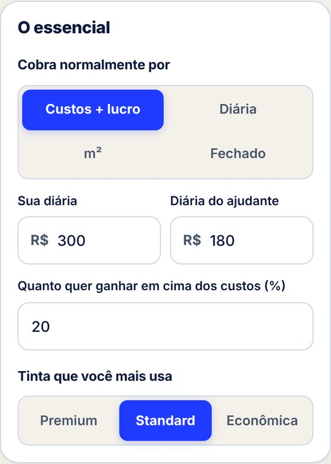
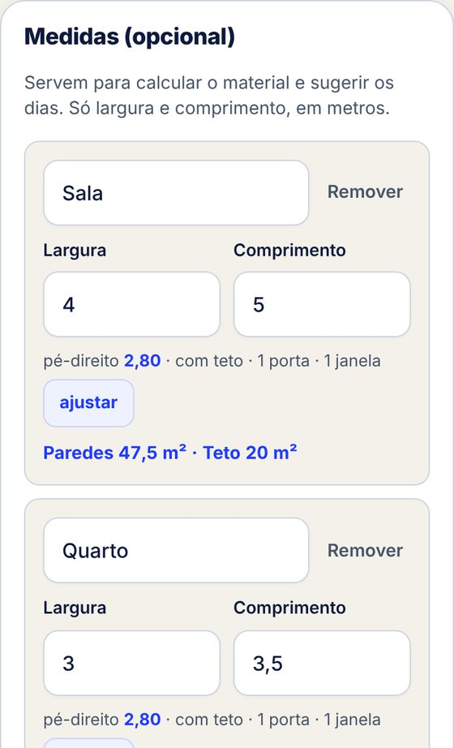
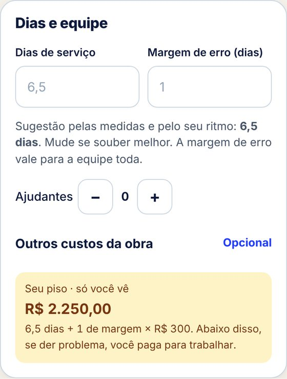

Como fazer seu orçamento de pintura
O passo a passo do começo até a folha pronta no WhatsApp, com as telas de verdade do app. Os números das imagens são do exemplo que já vem no app.
Seus preços (quando quiser)
Não precisa preencher nada antes: o app já vem com valores de referência e você pode fazer o primeiro orçamento agora. Quando quiser, em Meus preços você coloca sua diária, a diária do ajudante, quanto quer ganhar em cima dos custos e a tinta que mais usa. É só trocar pelos seus. Fica salvo no seu celular e todo orçamento novo já sai com isso.

O caminho: 3 passos
Abra o orçamento e toque em Começar meu orçamento. Quer ver antes como fica? Toque em Ver um exemplo pronto. Se preferir falar, toque em Grave um áudio: o app preenche e você só confere (no Facebook e no Instagram, abra no navegador para usar a voz).
Cômodos
Meça os cômodos: só largura e comprimento, em metros. Pé-direito, teto, portas e janelas vêm do padrão. Se for diferente, toque em ajustar. Com as medidas, o app sugere os dias. O jeito de cobrar já vem do seu padrão; para mudar, toque em trocar (veja qual usar).

Como está a parede
Marque tudo o que tiver: repintura, mudar de cor, cor forte, reboco novo, reparos (mofo, trincas, furos…). Escolha o acabamento e a linha da tinta. Isso muda as demãos, o material e o tempo de serviço.
Revisão: confira a conta
Digite o nome do cliente e confira as áreas, o material (o cliente compra ou você fornece, com 10% de sobra na quantidade), os dias, o preço e as condições: prazo, validade e forma de pagamento. Depois toque em Ver orçamento.
Qual jeito de cobrar usar
O app faz a conta dos quatro jeitos com o mesmo serviço. Na revisão, em Comparar com outros jeitos, dá para ver o valor de cada um e trocar.
Custos + lucro
Quando: você quer saber quanto ganha de verdadeVocê informa os dias de serviço e os ajudantes. Se tiver, abra Outros custos da obra (alimentação, combustível, ferramentas, aluguel de equipamento). Na revisão, escolha quanto quer ganhar em cima dos custos. O app mostra o seu lucro e até onde dá para descer se pedirem desconto.

Por diária
Quando: você cobra por dia trabalhadoVocê informa os dias de serviço e a margem de erro. O preço é dias × sua diária (de Meus preços). O app avisa se a margem de erro vai sair do seu bolso.

Por m²
Quando: você cobra pela área pintadaMeça bem os cômodos no passo 1: aqui o preço sai das áreas. Mais demãos e mais reparos aumentam o valor do m² sozinho. Os dias servem para o prazo e para mostrar se o preço cobre o seu mínimo.
Preço fechado
Quando: você já sabe o valor que vai pedirNa revisão, digite o valor da mão de obra. Os dias servem para o prazo e para o seu piso, o mínimo que pode cobrar sem sair no prejuízo.
A folha pronta e o envio
Em Ver orçamento aparece a folha: cliente, áreas, o que está incluso, total, material, prazo, pagamento e garantia. Toque em Enviar no WhatsApp ou em Copiar texto. O orçamento fica guardado em Meus orçamentos, onde você pode abrir de novo, duplicar ou marcar se fechou.
Achou algo estranho ou tem uma ideia?